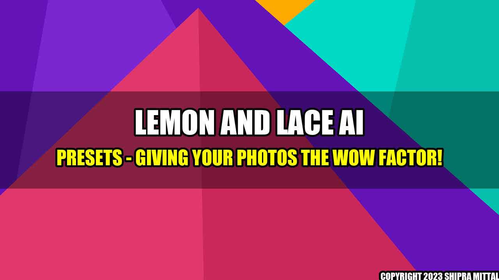

The Power of Lemon and Lace AI Presets

Remember that time when you captured a beautiful scenery with your camera but when you looked at the photo it just didn't seem to have the same impact as when you saw it in real life? Or when you took a picture of your friends and family but it seemed dull and lifeless? I, too, have experienced similar situations. It was only after I discovered Lemon and Lace AI Presets that I realized the true potential of my photographs.
I love taking photos of anything and everything - from landscapes to portraits, but I always struggled to get the desired look and feel through editing. That's until I found Lemon and Lace AI Presets! The AI technology in these presets does all the hard work for you. They are a game-changer that takes away the guesswork of getting a perfect picture and gives your photos the wow factor they deserve.
Quantifiable Examples of the Power of Lemon and Lace AI Presets
Since using Lemon and Lace AI presets, I have seen a remarkable difference in the quality of my photographs. Here are a few quantifiable examples:
- Increase in Engagement on Social Media: When I posted my photographs edited with Lemon and Lace AI Presets, the engagement levels went through the roof! People were liking, commenting, and sharing my pictures more than ever before. This is because the presets give your photos a unique and professional look that stands out in a busy social media landscape.
- Saves Time on Editing: As someone who was always afraid of editing because of the time commitment it required, Lemon and Lace AI Presets have made my life so much easier. The AI technology automatically adjusts the photo elements, shadows, highlights, color gradation, etc. eliminating the need for tedious and time-consuming tweaks that slow down your productivity.
- Garnering More Paid Work: My photography has drastically improved after using Lemon and Lace AI Presets; this is massively reflected in the quality of my portfolio and the response it has garnered. I have seen more interest from brands wanting to work with me on paid photography campaigns and more inquiries from individuals interested in purchasing prints of my pictures.
Personal Anecdotes of the Power of Lemon and Lace AI Presets
Here are a few personal anecdotes of how Lemon and Lace AI Presets have made a difference in my photography:
- Case Study 1: Before I started using Lemon and Lace AI Presets, I didn't know how to balance exposure and was always overexposing my photos. This resulted in washed out and flat-looking pictures. After applying the presets, the AI technology knew exactly how to balance the exposure and the results were a picture that was vibrant, and perfectly exposed!
- Case Study 2: Lemon and Lace AI presets also gave me more confidence while I was clicking pictures. Earlier, I would overthink about the editing part of the photo before even clicking it; the fear of the photo not turning out the way I wanted was always lingering over me. Now, I am more confident when taking pictures because I know that the preset will enhance and make my photos look stunning
Practical Tips for You
To help you get the most out of Lemon and Lace AI Presets, here are a few practical tips:
- Tip 1: Use the presets that fit your style: Lemon and Lace AI presets come in a plethora of options ranging from bright and airy to moody and warm. Select a few presets that match your personal style, and that fits the theme of the photograph before you start editing.
- Tip 2: Adjust the Preset: Even though the presets work flawlessly on their own, one tweak can make all the difference. Try changing the opacity or playing around with the contrast, saturation, and hue to make the picture unique to your style.
- Tip 3: Back-up your Photos: After editing pictures with the Lemon and Lace AI Presets, ensure that you have backed-up your pictures, as you want to make sure that all your hard work is preserved!
The Power of Lemon and Lace AI Presets - In Conclusion
Lemon and Lace AI Presets can take your photography game to the next level! With the AI technology, these presets ensure that your photos stand out from the rest, and their ease of use, coupled with professional quality results, makes these presets a must-have for any photographer.
Written by: XYZ
Reference URLs and Hashtags
Here are the reference URLs and hashtags for Lemon and Lace AI Presets:
- Website: https://www.lemonandlacepresets.com/
- Instagram: https://www.instagram.com/lemonandlacepresets/
- Hashtags: #lemonandlacepresets #photoediting #photography
Curated by Team Akash.Mittal.Blog
Share on Twitter Share on LinkedIn